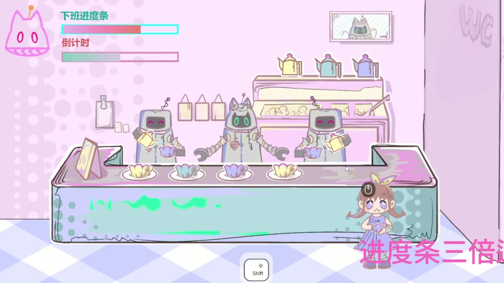

AI-ASSISTED 2D GAME · GAME DESIGN
Perfect Fit
装成机器人，体面地熬到下班。一个把“电子班味”转成节奏、潜行与风险博弈的三人团队游戏。

01 / 机制跟上节拍，
跟上节拍，
藏好你的下班计划。
跟随节拍维持伪装；按住 Shift 偷学并加速下班；顾客回头前恢复机器人待机；在所有人背对时冲进厕所直接通关。主题被做成了可感知的风险—收益循环。
02 / AI 工作流AI 嵌入职能，
AI 嵌入职能，
不替代人的判断。
策划用它整理工作语言，美术处理重复序列帧与换色，程序在人工框架上生成部分结果，音乐通过生成与筛选快速迭代。团队申报的 AI 助力比重为 50%，涵盖多个制作环节。
策划从零散想法到可执行语言
美术重复素材与 UI 改造
程序框架内生成、修改与整合